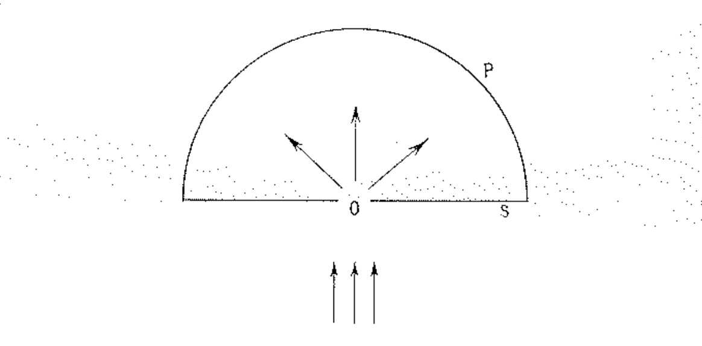
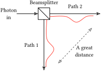
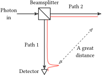

Spooky action at a distance is NOT about entanglement
If you look up the phrase “spooky action at a distance”, be it on YouTube, Google, or an LLM, you’ll most likely get the answer that it refers to the phenomenon of quantum entanglement.
There are a myriad of YouTube videos or Reddit comments, where when explaining “spooky action at a distance” to the general public, people default to the standard pop-sci explanation that concerns entanglement.
It goes something like this:
- Two quantum particles are somehow made to be correlated with each other, e.g., if one is spin up, the other must be spin down.
- Emphasize that but each of them are neither spin up nor spin down before “observation”, and are in a “superposition” instead.
- The two particles are then separated by a great distance.
- Next, bewilder your audience by claiming that when you “observe” one particle, and say it turns out to be spin up, the other particle must instantly becomes spin down, despite the great distance.
- Finally, claim that this is because the two particles are entangled, and that this entanglement connects the two particles across the great distance.
For the learned reader however, these 5 steps translate to:
- Two particles are entangled,
- and entangled particles are in a superposition. \frac{1}{\sqrt{2}}(|\uparrow\downarrow\rangle + |\downarrow\uparrow\rangle)
- Measurement leads to the instantaneous collapse of the wavefunction to the measurement basis (typically the basis states that are in superposition). |\uparrow\downarrow\rangle \quad \text{or} \quad |\downarrow\uparrow\rangle
Wait a minute… did I just say “instantaneous collapse of the wavefunction”?
As in the phenomenon that physics undergraduates learn that applies to all wavefunctions during a measurement, with or without entanglement? You know, the one where you have to apply the Born rule suddenly, and to update the wavefunction by hand manually instead of using the Schrödinger equation without understanding why? The one that is a separate phenomenon from entanglement? \frac{1}{\sqrt{2}}|\uparrow\rangle + |\downarrow\rangle \quad \longrightarrow \quad |\uparrow\rangle \quad \text{or} \quad |\downarrow\rangle
In fact, this pop-sci description always consists of two parts: the entanglement of the two particles, followed by the measurement of one particle. Quite plainly, the magic happens in the second step, the measurement process, and does not happen in the first step with just entanglement by itself.
So what is happening? Why do so many people get it wrong1?
1 In the “edutainment” space, I’ve only came across two instances where this was explained correctly: Veritasium and Sabine Hossenfelder.
You see, the phrase “spooky action at a distance” is a pop-sci term, and rarely or never comes up in the standard textbooks of quantum mechanics. As such, the standard pop-sci description of it has dominated and spread like a virus into the minds of physicists and physics-enthusiasts alike. We would just default to parrotting the same things without thinking too much into it.
But any physics undergraduate who paused for a moment, and thought about it for awhile, should have realized that it refers to the deeper problem/phenomenon of a measurement rather than entanglement.
And it is a shame that this deeper problem is often neglected or conflated with entanglement despite its deep and philosophical implications that concerns free will and the nature of reality.
But what about Einstein’s EPR paper?
Let’s look at the timeline:
1927: Einstein first raised his issues with quantum mechanics at the fifth Solvey conference, arguing that it is incomplete. He used the term “peculiar mechanism of action at a distance” (Bacciagaluppi and Valentini 2009, 485–87).
1935: Einstein, Podolsky, and Rosen published the famous EPR paper that introduced quantum entanglement. There is no mention of the phrase “action at a distance” in the paper (Einstein, Podolsky, and Rosen 1935).
1947: In a letter to Max Born where Einstein maintains his position that quantum mechanics is incomplete, the term “spooky actions at a distance” was used and popularized (Born et al. 1971, 157–58).
It seems to me that the Einstein’s “action at a distance” problem with quantum mechanics predates the concept of quantum entanglement, and that the case of the two entangled particles in the EPR paper that everyone parrots now is simply one example that demonstrates the issue.
Furthermore, in the context of the letters to Max Born in 1947:
“I cannot seriously believe in it because the theory cannot be reconciled with the idea that physics should represent a reality in time and space, free from spooky actions at a distance.”
“But I am quite convinced that someone will eventually come up with a theory whose objects, connected by laws, are not probabilities but considered facts, as used to be taken for granted until quite recently.”
On an unrelated note, it blows my mind how difficult it is to find an accessible copy of this document, despite it being 70 years old and so well-known.
It seems clear to me that Einstein’s problems with “spooky actions at a distance” concerns the nature of “realism” and it’s contradiction with “locality”, rather than entanglement.
This should be clear if we look at his 1927 example at the fifth Solvey conference.
Einstein’s 1927 example without entanglement

I’ll paraphrase a little:
Consider sending a single particle through a single slit that lands on the (hemisphere) screen. The particle will diffract through the slit, with a position wavefunction \Psi(x) that spreads out due to the diffraction. However, when the particle lands on the screen and is detected at just a single position x', quantum mechanics dictates that the wavefunction \Psi(x) will collapse to just a single position that is localized at x' (a Dirac delta), with probability |\Psi(x')|^2.
This is just standard textbook quantum mechanics.
What this means however, is that when the particle is detected at position x' on the screen, there is a “peculiar mechanism of action at a distance” that instantaneously prevents the particle from being detected at any other point on the screen (i.e., collapsing the wavefunction), regardless of its distance from x'.
One might imagine that the left and the right ends of the (hemisphere) screen are a great distance from each other. Right before the particle’s wavefunction hits the screen, the wavefunction exists on both the left and the right ends. But the instant it hits the screen, say at the right end, instantaneously, the wavefunction that existed at the left end of the screen must disappears under some “peculiar mechanism of action at a distance”.
Einstein argues that if we take the viewpoint that the wavefunction \Psi(x) is indeed a complete description of the particle’s position, then we must consider that the particle is potentially present at all x where |\Psi(x)|^2 is nonzero (which can span a great distance), and give up on locality when it ends up appearing at just a single x'.
Einstein instead prefers the viewpoint that the wavefunction \Psi(x) represents just a probabilistic ensemble due to our lack of knowledge (of hidden variables), and that in reality the particle has just a single actual path. In other words, the wavefunction \Psi(x) (and thus quantum mechanics) is not a complete description of the single particle.
These two different viewpoints where we either give up locality or the ontic existence of the path of the particle is where the discussions regarding “local realism” stems from.
This example touches on the main issue of “spooky action at a distance” (but without any mention of entanglement), where the wavefunction is “updated” instantaneously regardless of distances when it is measured at just one location.
Hardy’s modern example
We have come a long way since then, and there are now many examples that demonstrate this intuitively and formally without the long-winded explanation about entanglement.
Here’s an example provided by Lucien Hardy (Hardy 1995)2.
2 I cheated a little here, as to formalize this example mathematically, the concept of entanglement is still required. The detection of a photon in one path is entangled to a “vacuum mode” at the other path, i.e., a non-detection. But I’ll argue that in terms of the intuitive understanding of the setup, no mention of entanglement is necessary.


- Send a single photon to a beam splitter.
- The beam splitter has a 50% chance of letting the photon pass through, and a 50% chance of deflecting the photon to another path.
- The single photon is now in a superposition of two paths, and we can let the photon propagate as far as we want down the two paths, so that the two paths are separated by a great distance.
- Supposed we measure the photon in path 1 using a detector, and found it to be in path 1.
- Quantum mechanics dictates that instantaneously, the “potential” photon in path 2 must disappears, regardless of the great distance between the two paths, such that a detector at path 2 can now never detect the photon at path 2.
Additionally, if instead we were to remove the detector at the very last minute before the photon would have hit the detector in path 1, then a detector at path 2 can still potentially detect the photon at path 2, as though like our choice of putting the detector in path 1 affects what happens in path 2 a great distance away.
Hardy took Redhead’s definition of locality of (Redhead 1987): “elements of physical reality pertaining to one system cannot be affected by measurements performed ‘at-a-distance’ on another system.”
If we assume that the photon’s paths down either path 1 or path 2 are “ontologically real”, then our action of putting a detector at path 1 somehow affects the “reality” in path 2, regardless of the great distance separating them, i.e., we have to give up on locality.
A more cartoonish example with Schrödinger’s cat
Since the Schrödinger’s cat thought experiment is quite well-known among the general public, perhaps augmenting it to explain the underlying issue might be the way to go.
The original Schrödinger’s cat thought experiment goes like this:
- A cat is kept in a box that is isolated from the rest of the world.
- In the box is a vial of poison gas that is rigged to be released to kill the cat depending on the measurement outcome of a quantum system that has a 50% chance of occurring (typically detecting a radioactive decay that has a 50% chance of decaying).
- Because of this, before opening the box to the outside world, the cat is in a quantum superposition of being dead and alive.
- But once the box is opened, the cat will collapse to a single state of either dead or alive.
Consider instead that if the vial of poison did not release, instead of simply leaving the cat alive, a trap door opens beneath the cat, dropping it into an underground tunnel that connects to your neighbor’s house.
The bored cat can then go through the long tunnel and enters your neighbor’s house, in which it will take a nap on the couch.
Now, before opening the box in your house to check for the cat, the cat is in a superposition of being dead in the box locally in your house, or alive and asleep some distance away in your neighbor’s house.
So if you were to open the box to check, quantum mechanics dictates that instantaneously, the action that you performed locally in your house, somehow affects what happens in your neighbor’s house despite that it is a distance away.
This is the “spooky action at a distance”.
The state of the cat spans a great distance between the two houses, but somehow changes instantaneously everywhere based on actions performed only locally.
So where are we at now?
One reason this measurement problem is often ignored is because there is already a mainstream interpretation that physicists learn in textbooks3.
3 Of course, there is a zoo of interpretations of quantum mechanics, the most well-known of which is the many-worlds interpretation.
This is the regnant Copenhagen interpretation, where it is accepted that there is indeed no “real” existence of the cat at either houses before measurement, and that we just have to accept the manual updating of the collapse of the wavefunction by hand.
To quote Wikipedia: “no truth can be attributed to an object except according to the results of its measurement”. In other words, it makes little sense to ask why a measurement at your house can affect the “reality” at your neighbor’s house, if we accept that there is no “truth” statement that can be made about a cat at your neighbor’s house before measurement in the first place.
Sometimes, this interpretation manifests as the students learning that the wavefunction is simply a “probability wave” describing the position of the particle, and has no real existence until measurement. This of course runs the risk of conflating with Einstein’s preferred view that it is only a probabilistic description because of our lack of information (of hidden variables)4, but I guess students are typically more concerned with being able to solve an exam problem rather than the philosophical aspects.
4 The real answer is that we just don’t know what the wavefunction is physically, or that it simply is its own definition without any analog for our intuition.
Appendix
But entanglement is still a connection across distances right?
Not really.
Entanglement is simply correlations, and correlations, once created, can be maintained over great distances, thus nonlocal, regardless if it is quantum or classical. Correlations are not connections.
Indeed, if we have two entangled particles, A and B, and if we were to do some operation to A, the other particle B will NOT be affected. What will happen instead is that the correlations/entanglement between them will weaken as we just perturbed our particle A away from its initial state that was much more correlated/entangled with B.
Formally, we call this a local operation. And local operations cannot increase correlations/entanglement, nor can it affect the other particle that we did not perform the operation on.
In fact, the intuition behind this should be quite straightforward, and do not detract from our everyday lives.
For example, supposed if we print out 2 copies of a picture, and give each to Alice and Bob. Since the pictures are the same, they are correlated.
Now, Alice can draw something on her own copy of the picture, but doing so will inevitably make her picture different from Bob’s, i.e., correlations must decrease.
The only way to increase the correlation, is for Alice and Bob to communicate, and draw on their copies together in an agreed upon way, i.e., drawing the same thing5.
5 Note that this method can only increase classical correlations, and not entanglement (quantum correlations). Formally, this is called local operation and classical communication (LOCC).
There are no connections connecting the two pictures. They are simply correlated, and Alice and Bob can make them more or less correlated by performing operations on their own copies.
Instead, the “magic” behind all the things you heard about entanglement somehow being connected across distances IS the instantaneous collapse of the wavefunction, like what we have been discussing throughout this post.
It is the exception that is different from just “local operation” (see the next part).
So what exactly is the weirdness about quantum mechanics?
In my opinion, there are 3 main aspects to the measurement problem (that all relates to each other) that when put together, are the weirdest and deepest parts about quantum mechanics.
- Detraction from continuous evolution (e.g., from Schrödinger equation)6.
- Probabilistic nature (or true randomness).
- Instantaneous and nonlocal influence of the wavefunction.
6 This is what makes it different from normal operations in the previous part.
For the most part above, we only touched upon the third aspect of the “spooky” instantaneous and nonlocal update of the wavefunction. But the first two aspects are perhaps more interesting.
Whenever a quantum system evolves, it can be described by the Schrödinger equation7. The quantum system evolves deterministically and in a continuous way. In other words, given the initial state of the quantum system, we can predict and compute the state at any future time.
7 I’m oversimplifying as there’s also other kinds of evolution. But the point still stands.
Now this is not anything surprising. In fact, this is the case for ALL known laws of physics.
All, except a quantum measurement.
A quantum measurement is the only known physics of nature, out of the thousands if not tens of thousands of laws and behaviors that spans all of nature and human disciplines, that is not deterministic and features a discontinuous change from all past states8.
8 There are of course seemingly random or discontinuous behaviors in many systems in many domains, but those are due to a lack of information about the full system (like how Einstein thinks is also the case for quantum mechanics). I am instead assuming a Laplace’s demon situation where even if all information are accessible, we still see such a discontinuous jump from past states.
9 Yes, even when you roll a dice or generate a random number on your computer from the fluctuations of lava lamps, all these are only pseudorandom, and are actually deterministic. You might also notice that either way, free will is inconsistent with the current known laws of physics, as it fits neither determinism nor randomness.
This discontinuous change in the state of a quantum system (as far as mainstream opinion goes) is the only true randomness in all of known reality9.
For the computer scientists, this is as if the program of reality is written completely in pure deterministic functions with no side effects. All functions, except a single one that somehow requires an IO monad.
I find this to be the deepest aspect of quantum mechanics, and perhaps all of physics.
Some people, like Einstein (see the letter to Max Born above), thinks that reality shouldn’t be this way, and that everything should indeed be deterministic and must follows from past states. It seems that the only way forward for this view is to either exploit an unclosed loophole of Bell’s theorem to take the view of superdeterminism, or to give up on locality. For most however, this random and discontinuous nature is simply accepted or ignored under the Copenhagen interpretation.
Personally, I think that there is a lot more behind the measurement problem, and I am optimistic that we will eventually uncover a deeper understanding of it one day.